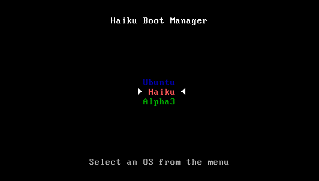
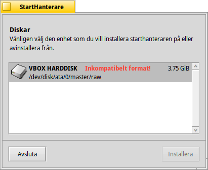
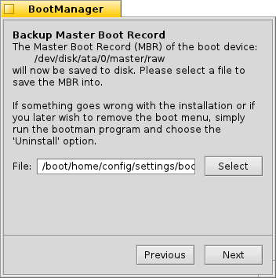
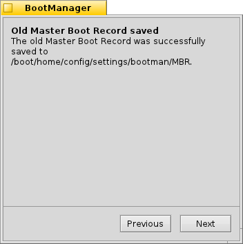
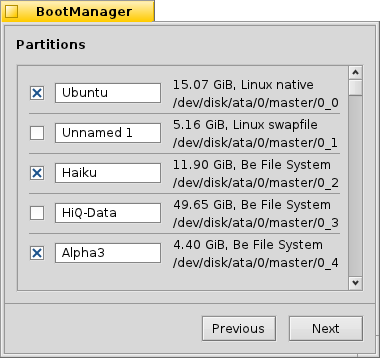
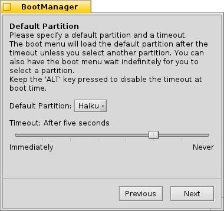
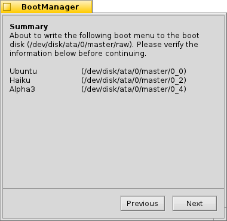
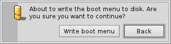

StartHanterare
| Deskbar: | Ingen inloggning, vanligtvis startad från Installatörens meny | |
| Position: | /boot/system/apps/BootManager | |
| Inställningar: | ingen MBR-säkerhetskopior är sparad som defaultvärde i ~/config/settings/bootman/ |
Om man inte lägger till Haikus partition i en befintlig starthanterare som GRUB, kan Haiku StartHanterare installera ett litet starthanteringmeny i MBR-blocket som ser ut så här:

StartHanterare leder dig genom installationsprocessen för bootmenyn.
 Välj destinationhårddisk
Välj destinationhårddisk

Starthanteraren börjar med en lista över alla tillgängliga hårddiskar från vilka du väljer destinationen. Om det redan finns en starthantering meny på den valda hårddisken becomes -knappen aktiverad, och leder dig genom en enkel procedur för att återställa den förrådda MBR, vilket innebär att du kan ta bort starthantering menyn. Annars väljer du för att fortsätta.
Backing up the Master Boot Record (MBR)
Ifall någonting går fel eller du vill ta bort starthantering menyn igen, är den Master Boot Record (MBR) nu sparad. Detta är tydligt en viktig steg, se till att du inte oavsiktligvis överkräser någon annan MBR-säkerhetskopia, till exempel från tidigare experiment!


Välj en destination för säkerhetskopiafilen "MBR". Om du vill kan du lämna fältet tomt och välja standardvägen. När du klickar på knappen kommer du att få bekräftelse om om säkerhetskopian är framgångsrik.
Configuring the boot menu


Nästa är du presenterad med en lista över alla partitioner på destinationhårddisken. Med hjälp av kontroller kan du bestämma vilka ingåenden som ska visas i starthantering menyn, och textfälten tillåter dig att ändra namn på en inläggs.
After that, you pick from the pop-up menu which partition will be booted from by default and set a timeout with the slider below. Here, "Immediately" will skip the boot menu entirely, "Never" will just stop at the boot menu. You can override the timeout setting by holding ALT while booting.
Skriva in starthantering menyn.


Before the boot menu is written to the MBR, you'll get a summary of your configuration and then one last chance to abort the operation. Don't worry though, as long as you keep the MBR backup safe, you can easily revert the changes. Should things get thoroughly messed up, you can always boot from a Haiku install CD or USB stick and write back the MBR backup with BootManager.
Restoring the backup of the Master Boot Record (MBR)
Det är för närvarande inte möjligt att avinstallera starthantering menyn med StartHanterare applikationen. En workaround emellertid är att använda kommandot dd i Terminal för att återställa den bevarade kopian av MBR.
Kommandot dd är typiskt sett så här:
dd if=/boot/home/config/settings/bootman/MBR of=/dev/disk/[...]/raw
The input parameter ("if") is the path to the backup of the MBR.
The output parameter ("of") is the path to the raw disk the MBR will be written to. You find all devices and their paths in the DriveSetup application.